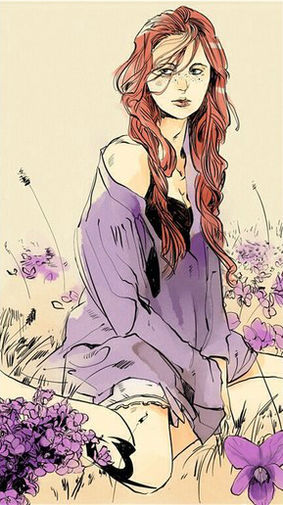

Клэри Фэирчайлд
Герои не всегда те, кто выигрывают. Они, те кто проигрывают, иногда. Но они продолжают бороться, они продолжают возвращаться. Они не сдаются. Это то, что делает их героями.
 Кларисса "Клэри" Адель Фэирчайлд, также известная как Клэри Фрэй, - это Сумеречный Охотник, дочь Джослин Фрэй и печально известного лидера Круга Валентина Моргенштерна. В течение многих лет Клэри жила жизнью примитивных вместе с Джослин до возвращения ее отца и ее брата, Джонатана, угрожающие ее новому миру, выбрасывая их жизнь из равновесия, поэтому Клэри оказывается в путешествии вместе со своими товарищами Сумеречными Охотниками, чтобы остановить их.
С учетом эксперимента ее отца, Клэри было невольно дано большее количество ангельской крови и, благодаря этому, способность воссоздавать мощные древние руны, не написанные в Серой Книге.
Характер и привычки
Клэри невероятно упрямая и саркастичная, черты рожденные от излишней защиты ее матери. Она так же очень заботливая и доброжелательная. Ради ее друзей и семьи, Клэри готова пойти на самые опасные поступки, часто не подумав, ставя себя в опасность, то есть обычно заставляя людей, которые заботятся о ней, сильно волноваться. Джейс даже сказал что ее упрямство соответствует его, что он подразумевал как причину почему они не выносили друг друга в начале.
Она - художница, прямо как ее мать, Джослин. У нее есть альбом, где она часто выражает свои эмоции и чувства через рисунки, ее версия дневника, используя рисование вместо слов.
Внешность
Ее часто описывают как точную копию Джослин — с их зелеными глазами, кудрявыми рыжими волосами, стройной фигурой, маленькой грудью и узкими боками — хотя она не видит этого, так же как она не видит красоты другие часто в ней видят. Было время когда Клэри чувствовала себя меньше, менее красивой, и более детской версией ее матери, хотя многие не согласятся. Она довольно-таки маленькая ростом, немного выше 157 сантиметров, имеет волосы которые считает морковного цвета, и "лицо полное веснушек".
Было упомянуто несколько раз что она одевается как мальчишка, носит футболки, джинсы и кроссовки, что иногда раздражает Изабель, которая позже выбрала ей одежду получше. Хотя позже в серии, она медленно перешла от мальчишеского стиля и начала больше беспокоится о том как она выглядит. Другие парни ей говорят что она милая или красивая, несмотря на то, что она лично о себе думает. Джейс (как видно в дополнительных материале от его точки зрения) тоже находит ее красивой и сказал, что Клэри, не как другие девушки, просто не знает этого.